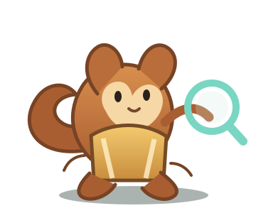

МАСТЕРСКАЯ СПАСАТЕЛЕЙ ЧЕРНИЛ
Спасаем важные чернила!
Убираем бумагу, оставляем печать и подпись — аккуратно, на прозрачном фоне.
Начать очистку ↓
01
Выберите изображение
Фото, скан или картинка с телефона
Изображение остаётся на вашем устройстве.
02
Настройте очистку
Подберите результат под свои чернила
38
Цвет чернил
03
Прозрачный результат
Проверьте линии и скачайте PNG
Исходник
Фото ещё не выбрано
После очисткиЗдесь появится PNG
Ручная обрезка
Проведите пальцем по результату, чтобы выделить нужную область.Размер задаётся при экспорте PNG. Для печати или вставки в Word проверьте масштаб в документе.
Выберите изображение, чтобы начать. Обработка выполняется локально.